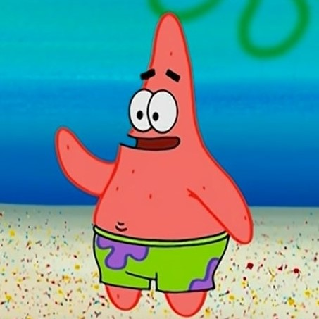
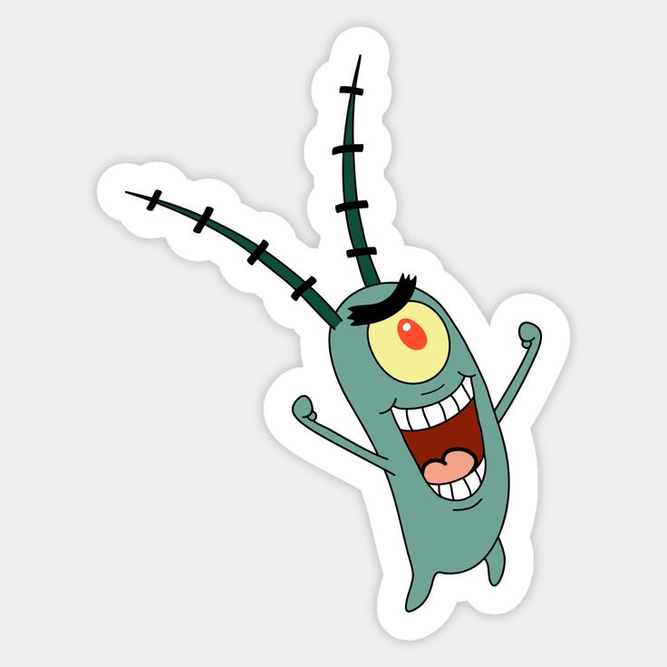
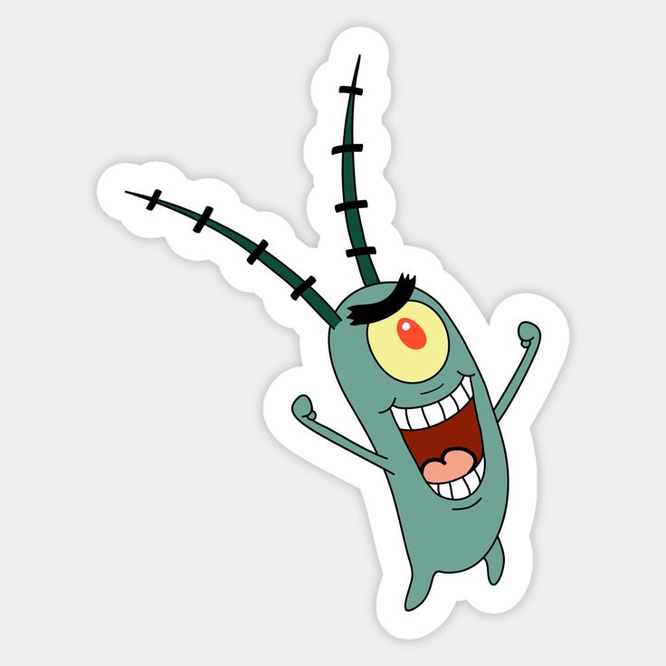

Personajes favoritos

Bob Esponja
Es el protagonista de la serie. Es una esponja amarilla y cuadrada, vive en una piña en Fondo de bikini junto con su mascota caracol Gary. Ama trabajar en el Crustáceo Cascarudo y hacer cangreburgers, ademas cazar medusas en el campo de medusas y soplar burbujas y hacer otras aventuras junto con su mejor amigo Patricio
mira mas

Patricio Estrella
Es una estrella de mar de color rosa, obviamente mejor amigo de Bob Esponja. Se destacas por su bañador verde con dibujos de flores púrpura, tambien por su escasa inteligencia que a veces lo hace cometer errores extraordinariamente tontos y que para algunos personajes puede resultar un poco insoportable.
Mira mas 
